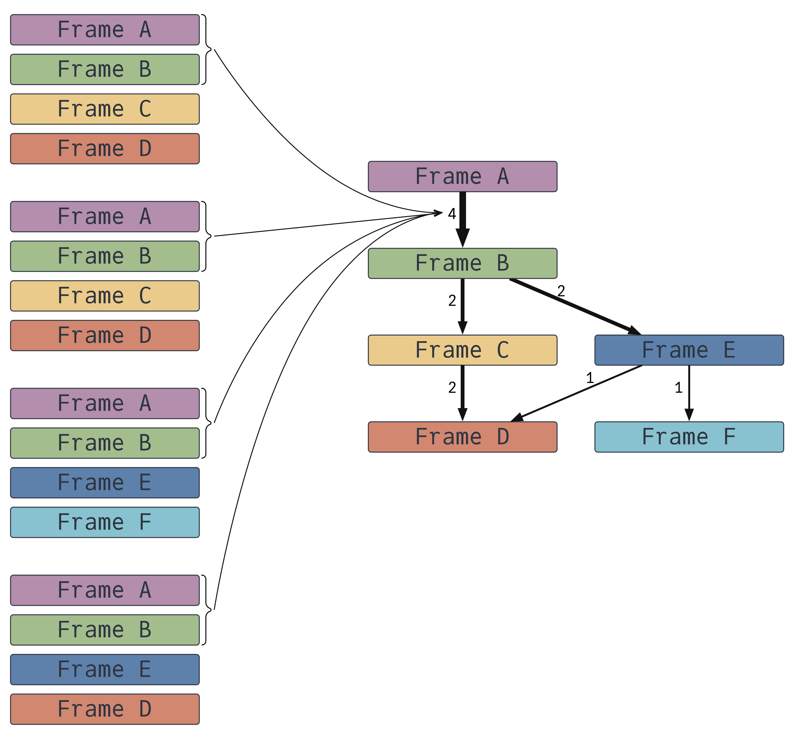
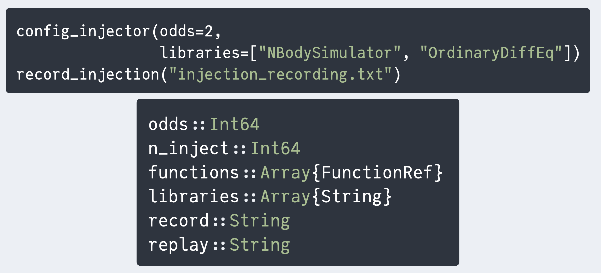

Reliable numerical computations are central to scientific computing, but the floating-point arithmetic that enables large-scale models is error-prone. Numeric exceptions are a common occurrence and can propagate through code, leading to flawed results. This paper presents FlowFPX, a toolkit for systematically debugging floating-point exceptions by recording their flow, coalescing exception contexts, and fuzzing in select locations. These tools help scientists discover when exceptions happen and track down their origin, smoothing the way to a reliable codebase.
Combine stack frames into a tree highlighting common paths:
Configure an injector, set up a recording file:
